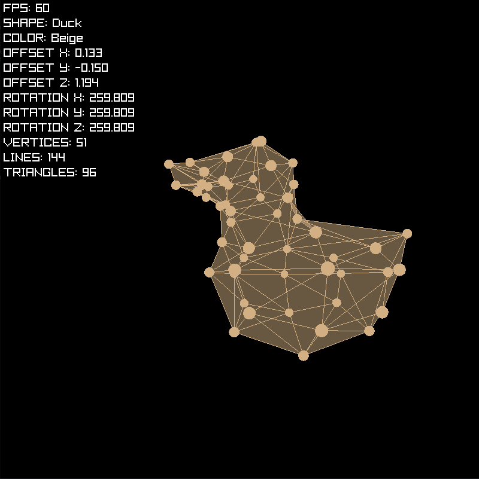
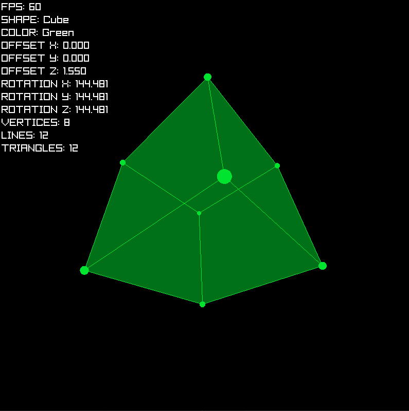
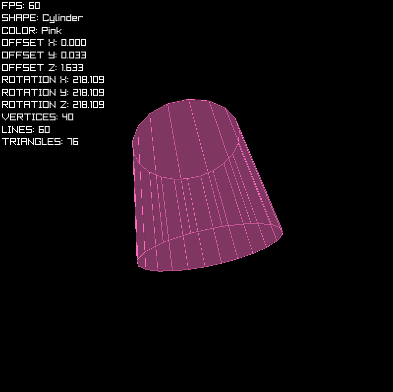
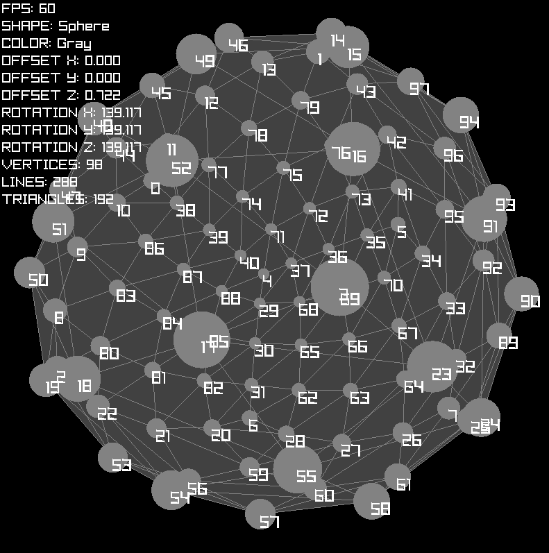
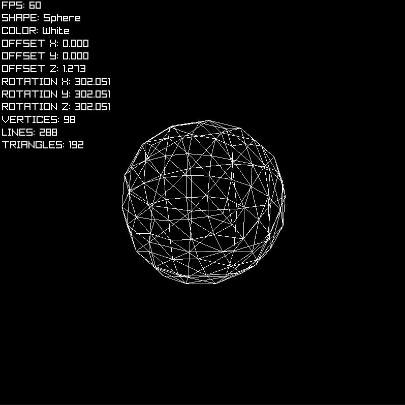
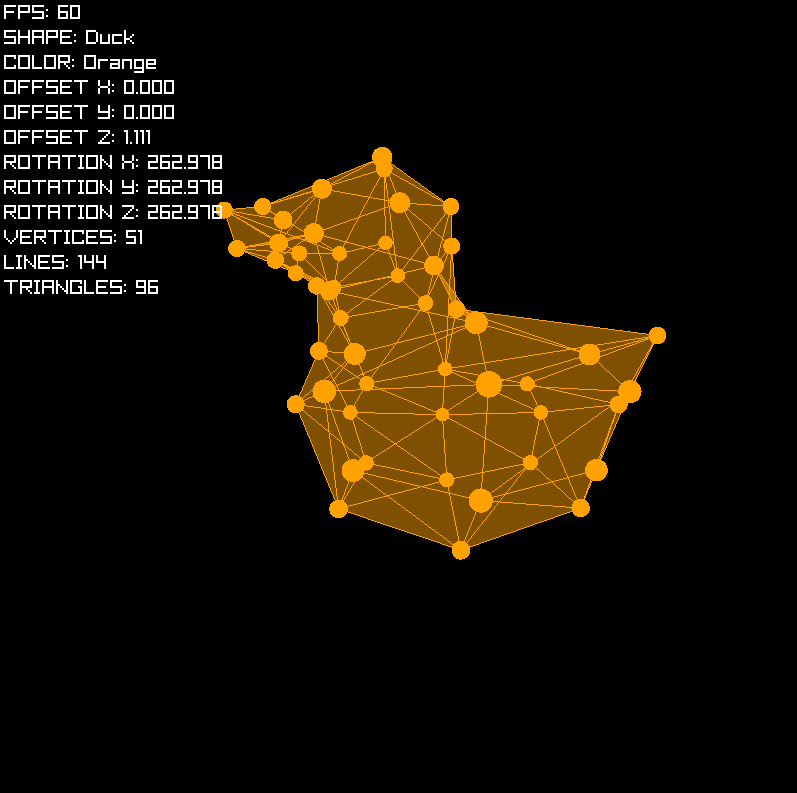

3D Toy Renderer
Daniel Vishnevsky
About
3D toy renderer capable of rendering 3D models from a list of vertices, lines and triangles. Made in 2 days with C and Raylib.
Features
It can handle any count of models, vertices, triangles and lines and has multiple render options and draw colors toggleable with certain keybinds. I have implemented 3D position and Euler angles rotation.
By default, I've included a few models: square, triangular prism, pyramid, cylinder, sphere and a low-poly duck model I quickly crafted in Blender. But it can render any model, if supplied the necessary data (although, it cannot render textures).
Development
Since this only took two days to implement there's not much to document. In the first day I implemented all of the 3D logic and in the second day I added a bunch of models and polished it up. It was a fun challenge. Source code is available on Github.
Later on I decided to fix a major flaw: there was a mirroring issue when the model had negative Z. Now both the controls and the rendering logic is better. Triangles and lines might disappear when camera is inside of them, however it is much better than it was before.
Gallery





